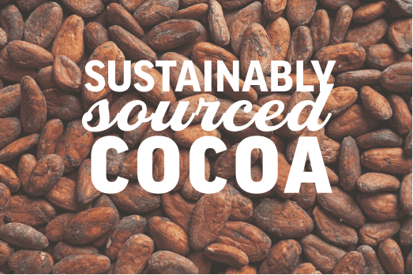
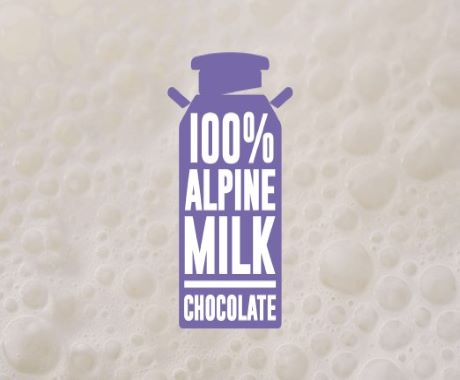
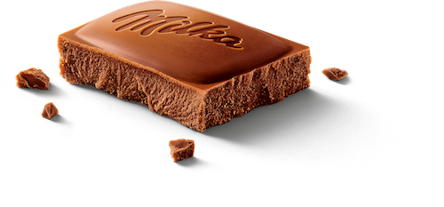

Wat maakt Milka chocolade uniek?
-
De cacaobonen voor Milka worden ingekocht via het Cocoa Life Programma. Dit programma houdt zich bezig met het ondersteunen van de cacaoboeren en het beschermen van onze planeet. Kom hier meer te weten over het Cacou Life Programma.
 -
Ingredienten van de hoogste kwaliteit zijn gebruikt om de romige en intenste Milka chocolade te ontwikkelen. Deze ingredienten zijn zorgvuldig uitgekozen om de unieken tederheid van alpenmelkchocolade te garanderen. Hetgeen waar we allemaal zo van houden.

Nieuwe rondere en zachtere vormen.
De Milka reep heeft een nieuwe uitstraling gekregen. Zo is de reep in een modernder jasje gestoken. Verder is de vorm ronder geworden wat zorgt voor een nog fijnere smaakervaring. Daarnaast heeft ook deze mascotte, Lila de koe, een eigen plekje gekregen. Heb jij haar al gespot?
Ondek ze allemaal